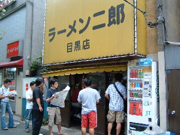
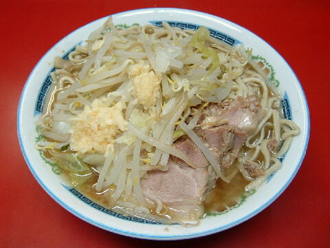

目黒区 目黒 3-7-2
水
12：00〜16：00 18：00〜24：00

小ラーメン 500円、小ラーメン豚入り 600円、小ラーメンW豚入り 700円
大ラーメン 600円、大ラーメン豚入り 700円、大ラーメンW豚入り 800円
店員は、元塾生の店主と助手。
白コショウ（ギャバン）としょうゆダレ。
レンゲ無、ティッシュ無、名刺は少ないが有。
BGMは、AMラジオ。
トッピングは、ヤサイ、ニンニク、カラメ、アブラ。
「ラーメン二郎 目黒」でヤフー検索
「ラーメン二郎 目黒」でヤフーリアルタイム検索
「ラーメン二郎 目黒」でグーグル検索

小ラーメン豚入り ニンニク
麺は、富士丸（店主の修行店）譲りのシナシナした食感のストレート麺。量は少なめ。
ぶたは、小ぶりで薄切りだが柔らかくて美味しい。
スープは、豚の出汁と醤油で食わせるタイプ。薄ければテーブルに置いてある醤油ダレで調節できる。
ヤサイは、モヤシ8：キャベツ2の割合。やや柔らか目かな。
ニンニクは、中位の大きさに刻まれた、しっかりとニンニクの味がするもの。
全体的に少ない印象だが、コストパフォーマンスは二郎で一番。
ＰＣ店